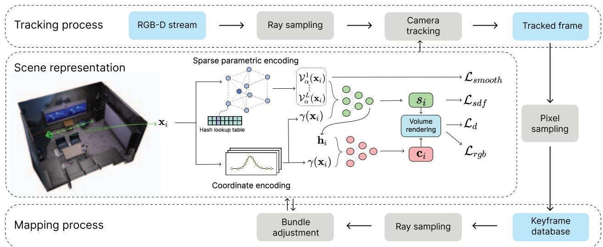
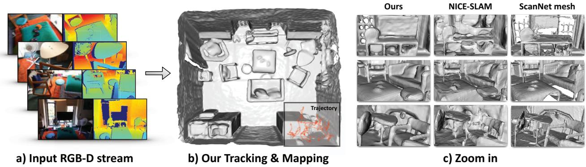

原图注（Fig. 2）：COORDINATE based encodings achieve hole filling but require long training times. PARAMETRIC encodings allow fast training, but fail to complete unobserved regions. JOINT coordinate and parametric encoding (Ours) allows smooth scene completion and fast training. 怎么看这张图：这是「频段分工」最直观的一张。左：只用坐标编码——能补洞但慢；中：只用参数（hash）编码——快但不会补洞、缺连贯；右：并联——又快又补全。三栏对照把「为什么要两路并联」说尽了。
前几篇（iMAP / NICE）因为信息挤在全局结构里，只能做局部或窗口 BA，鲁棒性差；Co-SLAM 用「局部性好的 hash + 并联坐标编码」换来了「可以从整条轨迹取光线」的自由。下面这张图把「局部 BA 窗口」和「全局 BA 大池」画成对比。
这张图在画什么：同一条轨迹上的关键帧，两种 BA 各自「从哪些帧取约束」。 怎么看这张图：① 橙框是 NICE 式的局部 BA 窗口——只在相邻几个关键帧里取光线，窗口外的事不管；② 绿框是 Co-SLAM 的全局 BA——从整条轨迹的所有关键帧里随机取光线（虚线大池），连线的粗细表示约束强弱、分布更广；③ 前者易漂、后者因为参考了全轨迹而更鲁棒，也由此可以放弃「关键帧选择」这一步。 要记住的一句话：局部性好的表示，才敢做全局 BA。

原图注（Fig. 3）：Overview of Co-SLAM. 1) Scene representation: using our new joint coordinate+parametric encoding … 2) Tracking … 3) Mapping: global bundle adjustment to jointly optimize the scene representation and camera poses taking rays sampled from all keyframes. 怎么看这张图：它把「坐标编码 + hash 网格 → 两浅 MLP → RGB/SDF」与「track / map / 全局 BA」画全了。重点看 3) 那句「rays sampled from all keyframes」——这就是本节主角全局 BA 的原文出处。
5. 速度数字：标题就强调 real-time
Co-SLAM 的实时性是其卖点（标题与摘要都强调 real-time）。关键数字：
指标
Co-SLAM
对照（NICE）
帧率（Replica）
17.4 FPS
0.91 FPS
帧率（ScanNet / TUM）
12–13 Hz
0.1–1 Hz
参数量
仅 0.26 M
17.4 M
Replica Depth L1 (cm)
1.51
1.90
相比 NICE，Co-SLAM 在精度相近或更好的前提下，速度提升了约 10–20 倍，参数量却只有零头（0.26 M vs 17.4 M）。它原文承认的局限：依赖 RGB-D、对光照变化与深度不准敏感；未做信息引导采样（仍随机像素）；不做回环（第 203 行）。

原图注（Fig. 1）：We present Co-SLAM, a neural RGB-D SLAM method that performs online tracking and mapping in real time … joint coordinate and sparse-parametric encoding with global bundle adjustment … plausible hole-filling. 怎么看这张图：这是标题图，点出了三个关键词——「并联编码」「全局 BA」「省内存」。把这张图和上面的 Fig. 2、Fig. 3 连起来看，整篇的骨架就清楚了。